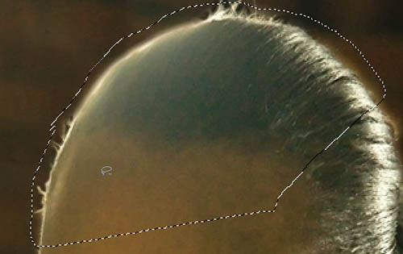
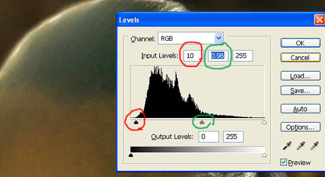
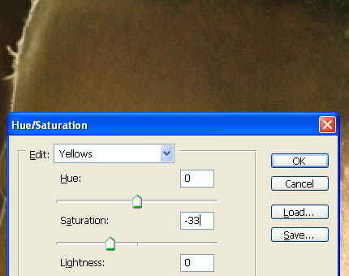
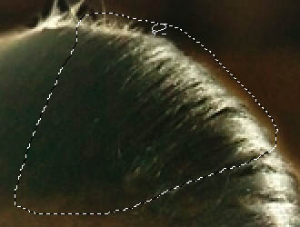
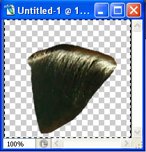
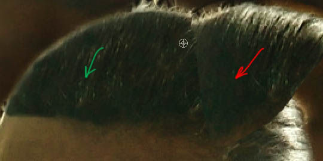
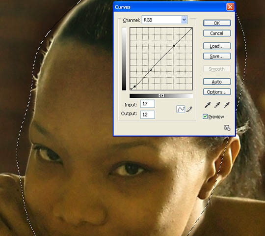
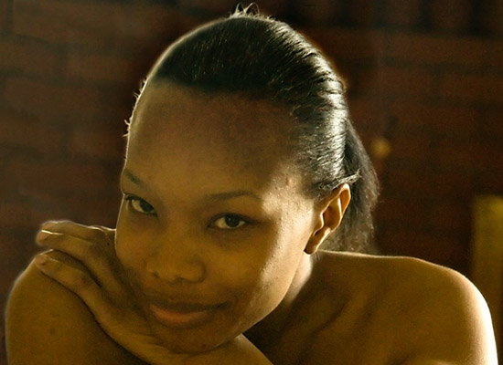

|
Decimating Lens Flare in PhotoshopPage 2, version 1.0, © 2008 by Dale Cotton, all rights reserved Example 3 &ndash skin and hairFig. 11: Flare on skin and hair (click for full size version) A friend took a shot she wants to use but is stymied by the offending lens flare. Fig. 11 is a crop from the full frame containing the problem area (and so, regrettably, you'll never know just what state of dishabile the strapless young lady is actually in ;). We can see that something more than the above techniques will be needed, because texture in the hair on the left has been lost. Note: you'll want to live at 200% mag. while following these steps:  Fig. 12: Select problem area 1. Select the flared area, leaving some margin all around. There's no clear point where the flare begins and ends on the forehead, so just about any selection you make therre will do. Feather about 20 pixels.  Fig. 12: Clip unused darks 2. Open the Levels dialogue, and clip the unused portion of the histogram to the left (red circled slider in Fig. 13). Adjust the mid point slider (green circled slider) slightly to compensate for the overall darkening this produces.
Fig. 13: Apply curve 3. Use the Curves dialogue (normal RGB channel), to recover as much darkness in the hair as possible – essentially the middle and middle right – while leaving the middle-toned forehead unchanged. (Click on the forehead to find where it falls on the histogram (red circle in Fig. 14), then create a lock point there.) Click OK to apply; you may want to save the current selection in case you need it later.  Fig. 14: Desaturate yellow channel 4. Notice that this multi-point curve has reddened the forehead. Deselect the previous selection, circle the reddened area, and feather. Open the Hue/Sat./Lum. dialogue, switch to the Yellow "channel", then desaturate to taste. This leaves us with everything done but the hard part – regaining the contrast and detail in the flared hair region. The information is not there, so it will have to be invented. We could simply clone from the middle of the hair on to the flared area on the left, but the angle the hairs travel from forehead to crown changes too much. No problem; Photoshop to the rescue, as always.  Fig. 15: Select area to work from in following steps 5. Deselect from step 4, then select a non-flared portion of hair (no feather), centre-right. Press Ctrl+C to copy; Ctrl+D to deselect; Ctrl+N to create a new window; Ctrl+V to paste.  Fig. 16: New image of hair selection after rotation 6. Open Image->Rotate->Arbitrary, then set an angle to rotate the section of hair so it more closely matches the angle of the flared hair in the original. I find 30 degrees counter-clockwise to be about right. 7. Press Ctrl+A to select all, then switch to the original image, then press Ctrl+V to paste; this creates a new layer. Use the Move tool to locate the rotated patch of hair to the side of the flared patch.  Fig. 17: Rotated hair as new layer for cloning 8. Switch to the rubber stamp tool, then clone from the rotated patch (red arrow) to the flared patch (green arrow). You are working on the new layer so you don't need to worry too much about the hairline. 9. When done, select the rotated patch of hair, then press the Delete key to delete it. Now use the Erase tool at low opacity (around 20) to work around the hairline to blend in the new hair with the old. You can hide the new layer at any time to refresh your memory of exactly where the hairline is.  Fig. 18: Face selected for contrast change 10. Now that the hair is normal, we can see that in fact the contrast of the entire face is lower than it should be. Working on the background layer, create a rough selection around the face; feather about 20; then apply a curve like the one in Fig. 18, that locks the middle and top, then dips the bottom for contrast in the darker areas. If needed, follow with a yellow channel desaturate.  Fig. 19: Final version Voilá! That's it. You can flatten the two layers or not, depending on your degree of editing paranoia ... But wait! What about the dark halo around the subject's head? Is this part of the scene or some sort of reverse flare? Either way, you should be able to eliminate it now quite handily – you know the drill... :) If you think about it, this is a very powerful technique. A tailor, needing to patch a hole in a pair of pants, will scrounge around in his coveted collection of scraps for as close a match as possible to the fabric of the pants. If we have a section of an image to repair, do we have a source portion form the same image to work from? If no, do we have one in another shot from the same session? If no, can we find one in any image available what so ever? If what we find is the wrong size, we resample; if the wrong angle we rotate; if the wrong colour we use Replace Color or the Curves channels or whatever to change the colour – and so on.
|

{kind=link}